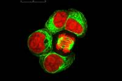
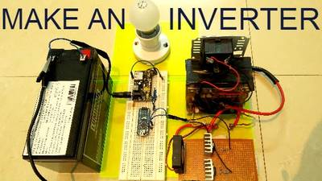

2016-06-16 - Nº 59

Editorial
Esta é a Newsletter Nº 59 que se apresenta com o mesmo formato que as anteriores. Se gostar da Newsletter partilhe-a!
Todas as Newsletters encontram-se indexadas no link.
Esta Newsletter tem os seguintes tópicos:
Esta semana foi anunciado que irá ser lançado o Bluetooth 5 que irá aumentar significativamente o alcance, a velocidade e a capacidade de difusão de mensagens. Com a expectativa de quadruplicar o alcance e duplicar a velocidade de ligações de baixo consumo tratam-se de boas noticias para o universo IoT. A Datwyler vai adquirir a Premier Farnell - conhecida pelo fabrico do Raspberry PI. Um grupo de interessados conseguiu reunir-se e fazer renascer um conector que se encontrava obsoleto e sem produção. Trata-se de um conector DB-19 que é usado no computadores Macintosh antigos para ligar discos e que pode atualmente ser usado através de um emulador.
Na Newsletter desta semana apresentamos diversos projetos de maker. Na rubrica "Documentação" apresentamos oito livros (eBooks) que podem ser descarregados livremente e que esta semana são sobre Migração de Bases de Dados SQL server para a Azure, introdução a sociologia, iniciação ao desenvolvimento de aplicações Open Source, iniciação ao desenvolvimento de aplicações em DB2, aprendendo Perl da forma mais complicada, percebendo Big Data, construção de compiladores e guia de bolso do Ubuntu.
Está disponível por mais alguns dias um pacote de eBooks que considero muito interessante pelo custo. Podem consultar no Link do Humble Bumble.
Na próxima semana (dias 25 e 26) realiza-se no pavilhão do conhecimento a Maker Faire Lisboa, o altLab irá participar com diversos projecto que irei falar na próxima newsletter.
 João Alves ([email protected])
João Alves ([email protected])
O conteúdo da Newsletter encontra-se sob a licença  Creative Commons Attribution-NonCommercial-ShareAlike 4.0 International License.
Creative Commons Attribution-NonCommercial-ShareAlike 4.0 International License.
Novidades da Semana ^
Bluetooth® 5 quadruples range, doubles speed, increases data broadcasting capacity by 800%
"The Bluetooth Special Interest Group (SIG) announced that its next release, coming late 2016 to early 2017, will be called Bluetooth 5 and will include significantly increased range, speed, and broadcast messaging capacity. Extending range will deliver robust, reliable Internet of Things (IoT) connections that make full-home and building and outdoor use cases a reality. Higher speeds will send data faster and optimize responsiveness. Increasing broadcast capacity will propel the next generation of “connectionless” services like beacons and location-relevant information and navigation. These Bluetooth advancements open up more possibilities and enable SIG companies – now at an all-time high of 30,000 member companies – to build an accessible, interoperable IoT. Bluetooth 5, projected for release in late 2016 to early 2017, will quadruple range and double speed of low energy connections while increasing the capacity of connectionless data broadcasts by 800 percent. It achieves all this alongside its industry-leading power performance. With the major boost in broadcast messaging capacity, the data being transferred will be richer, more intelligent. This will redefine the way Bluetooth devices transmit information, moving away from the app-paired-to-device model to a connectionless IoT where there is less need to download an app or connect the app to a device."
DATWYLER to acquire PREMIER FARNELL
"Today, the boards of Dätwyler Holding AG ("Datwyler") and Premier Farnell plc ("Premier Farnell") have reached agreement on the terms of a recommended all-cash offer by Datwyler for the entire issued and to be issued share capital of Premier Farnell (the "Transaction"). Premier Farnell and Datwyler are two leading distributors of electronic components with complementary product ranges and geographic market presence. The combination of Premier Farnell and Datwyler creates a leader in high-service distribution of electronic components and in doing so realises significant value for the shareholders of both companies."
DB-19: Resurrecting an Obsolete Connector
"This is a happy story about the power of global communication and manufacturing resources in today’s world. If you’ve been reading this blog for any length of time, then you’ve certainly heard me whine and moan about how impossible it is to find the obscure DB-19 disk connector used on vintage Macintosh and Apple II computers (and some NeXT and Atari computers too). Nobody has made these connectors for decades. I’ve got a disk emulator product called Floppy Emu that attaches to an Apple DB-19 port, so I need a steady supply of these connectors to build my hardware, and that’s a problem. Over the past couple of years, I’ve scrounged what seems like every warehouse and basement on the planet, and bought up nearly the entire world’s remaining supply of new-old-stock DB-19 connectors. My last few product batches included DB-19s from some very obscure international sources. It was clear I’d reached the end of the road."
Outras notícias
- Cypress Introduces New Programmable Analog SoCs for Embedded IoT Applications with Multiple Sensors
- STMicroelectronics Simplifies Design-In of State-of-the-Art Security for the IoT
- ARM Announces Mali Egil Video Processor with VP9 Decode, VP9 & HEVC Encode, and 4K @ 120 Hz Support
Ciência e Tecnologia ^
LIGO Does It Again: A Second Robust Binary Black Hole Coalescence Observed
"The two LIGO gravitational wave detectors in Hanford Washington and Livingston Louisiana have caught a second robust signal from two black holes in their final orbits and then their coalescence into a single black hole. This event, dubbed GW151226, was seen on December 26th at 03:38:53 (in Universal Coordinated Time, also known as Greenwich Mean Time), near the end of LIGO's first observing period ("O1"), and was immediately nicknamed "the Boxing Day event". Like LIGO's first detection, this event was identified within minutes of the gravitational wave's passing. Subsequent careful studies of the instruments and environments around the observatories showed that the signal seen in the two detectors was truly from distant black holes – some 1.4 billion light years away, coincidentally at about the same distance as the first signal ever detected. The Boxing Day event differed from the LIGO's first gravitational wave observation in some important ways, however."
Gene circuits in live cells can perform complex computations

"Living cells are capable of performing complex computations on the environmental signals they encounter. These computations can be continuous, or analogue, in nature — the way eyes adjust to gradual changes in the light levels. They can also be digital, involving simple on or off processes, such as a cell’s initiation of its own death. Synthetic biological systems, in contrast, have tended to focus on either analogue or digital processing, limiting the range of applications for which they can be used. But now a team of researchers at MIT has developed a technique to integrate both analogue and digital computation in living cells, allowing them to form gene circuits capable of carrying out complex processing operations."
The Evolutionary Origins of Hierarchy
"Hierarchical organization—the recursive composition of sub-modules—is ubiquitous in biological networks, including neural, metabolic, ecological, and genetic regulatory networks, and in human-made systems, such as large organizations and the Internet. To date, most research on hierarchy in networks has been limited to quantifying this property. However, an open, important question in evolutionary biology is why hierarchical organization evolves in the first place. It has recently been shown that modularity evolves because of the presence of a cost for network connections. Here we investigate whether such connection costs also tend to cause a hierarchical organization of such modules. In computational simulations, we find that networks without a connection cost do not evolve to be hierarchical, even when the task has a hierarchical structure. However, with a connection cost, networks evolve to be both modular and hierarchical, and these networks exhibit higher overall performance and evolvability (i.e. faster adaptation to new environments). Additional analyses confirm that hierarchy independently improves adaptability after controlling for modularity. Overall, our results suggest that the same force–the cost of connections–promotes the evolution of both hierarchy and modularity, and that these properties are important drivers of network performance and adaptability. In addition to shedding light on the emergence of hierarchy across the many domains in which it appears, these findings will also accelerate future research into evolving more complex, intelligent computational brains in the fields of artificial intelligence and robotics."
-
"VTT Technical Research Centre of Finland developed an extremely efficient small-size energy storage, a micro-supercapacitor, which can be integrated directly inside a silicon microcircuit chip. The high energy and power density of the miniaturized energy storage relies on the new hybrid nanomaterial developed recently at VTT. This technology opens new possibilities for integrated mobile devices and paves the way for zero-power autonomous devices required for the future Internet of Things (IoT). Supercapacitors resemble electrochemical batteries. However, in contrast to for example mobile phone lithium ion batteries, which utilize chemical reactions to store energy, supercapacitors store mainly electrostatic energy that is bound at the interface between liquid and solid electrodes. Similarly to batteries supercapacitors are typically discrete devices with large variety of use cases from small electronic gadgets to the large energy storages of electrical vehicles."
Documentação ^
A documentação é parte essencial do processo de aprendizagem e a Internet além de artigos interessantes de explorar também tem alguma documentação em formato PDF interessante de ler. Todos os links aqui apresentados são para conteúdo disponibilizado livremente pelo editor do livro.
Livros
Microsoft Azure Essentials Migrating SQL Server Databases to Azure
"Part of the “Microsoft Azure Essentials” series, this ebook helps SQL Server database users understand Microsoft’s offering for SQL Server in Azure. Learn how SQL Server in Azure is similar to SQL Server in an on-premises environment, and how they are different. The author, a content lead for Azure.com, walks you through the steps of getting started with SQL Server in an Azure virtual machine and with Azure SQL Database. Follow the numerous screenshots to create a trial subscription, create SQL Server in an Azure virtual machine, create an Azure SQL Database, migrate an on-premises database to each Azure environment, create users, back up and restore data, and archive data."
-
"Introduction to Sociology is intended for a one-semester introductory sociology course. Conceived of and developed by active sociology instructors, this up-to-date title and can be downloaded now by clicking on the "Get this book" button below. This online, fully editable and customizable title includes sociology theory and research; real-world applications; simplify and debate features; and learning objectives for each chapter."
Getting Started with Open Source Development
"Open source software development is a community-driven methodology to develop products, from the design and development stages to distribution. Developers across different parts of the world are passionate about their collaboration, and several successful projects including Firefox, Moodle, and Drupal are widely used today. Moreover, many companies are using open source software as the foundation to build their business models. This books gets you started into the fascinating world of open source software development. Using the exercises and case studies provided, you will get good hands-on experience to contribute to and start open source projects."
Getting Started with DB2 Application Development
"DB2 Express-C from IBM is the no-charge edition of DB2 data server for managing relational and XML data with ease. DB2 Express-C runs on Windows®, Linux®, Solaris, and Mac OS X systems, and provides application drivers for a variety of programming languages and frameworks including C/C++, Java, .NET, Ruby on Rails, PHP, Perl, and Python. Review this book and get started with DB2 application development!"
-
"Learning Perl the Hard Way is a free book available under the GNU Free Documentation License. Readers are free to copy and distribute the text; they are also free to modify it, which allows them to adapt the book to different needs, and to help develop new material."
-
"In this book, the three defining characteristics of Big Data -- volume, variety, and velocity, are discussed. You'll get a primer on Hadoop and how IBM is 'hardening' it for the enterprise, and learn when to leverage IBM InfoSphere BigInsights (Big Data at rest) and IBM InfoSphere Streams (Big Data in motion) technologies. Deployment and scaling strategies plus industry use cases are also included in this practical guide. Review this book and get started with big data!"
-
"A refreshing antidote to heavy theoretical tomes, this book is a concise, practical guide to modern compiler design and construction by an acknowledged master. Readers are taken step-by-step through each stage of compiler design, using the simple yet powerful method of recursive descent to create a compiler for Oberon-0, a subset of the author's Oberon language. The hands-on, pragmatic approach makes the book equally attractive for project-oriented courses in compiler design and for software engineers wishing to develop their skills in system software."
Ubuntu Pocket Guide and Reference
"Written by award-winning author Keir Thomas, Ubuntu Pocket Guide and Reference is a totally unique and concise guide for everyday Ubuntu use. It's the world's most popular Ubuntu book, with over half a million readers (and rising!)."
Revistas
-
"New Electronics is a fortnightly magazine focusing on technological innovation, news and the latest developments in the electronics sector. Downloadable as a digital page turner or pdf file, or offered as a hard copy, the New Electronics magazine is available in a format to suit you."
Modelos 3D ^
Com a disponibilidade de ferramentas que permitem dar azo a nossa imaginação na criação de peças 3D e espaços como o thingiverse para as publicar, esta rubrica apresenta alguns modelos selecionados que poderão ser úteis.
Hammer
This is just a small little hammer.
Please post your makes if you make one and fed back to help me create better designs.
UnoPCB - Arduino Uno ProtoShield Circuit Board Breadboard
Genuino / Arduino Uno ProtoShield - Circuit Board
Printable circuit board for your Arduino Uno project. If you don't have pin connectors you can connect the shield to Arduino with cable (that's why I'm design this shield). There is a special .stl file with cable mount. When soldering be careful so that the plastic does not melt. I attached a paper with front face and back side of this board to design you shield by pen.
http://www.thingiverse.com/apps/customizer/run?thing_id=1534620 You can customize your board (shield height, grid size, cable holder, ...).
Customizable Enclosure with Lid
This is a simple enclosure (aka "a box") with variations on the matching lid.
Lid Notes:
- The lid can be a simple flat plate, have a lip or be omitted completely.
- Lip Width only applies to the Partial lip.
- Additional height added to lip will make the inner lip taller
- Extra Lid spacing will make the inner lip smaller if you increase the spacing.
Projetos Maker ^
Diversos Projetos interessantes.
-
"The Dtto v1.0 Robot is a modular transformable robot designed to be versatile, flexible and self-reconfigurable. The idea of modular robots is that they can adopt any shape they want, by changing the position and the connection of their modules. This robot is aimed for research on modular self-reconfigurable robots and educational purposes. It is designed to allow multiple modules to communicate, mechanically connect and disconnect and to work collaboratively in the locomotion, self-reconfigurability and efficient movement. The versatility of the robot will allow it, in the future, to be able to perform rescue operations, exploration of unknown environments and space exploration."
PSoC 4 : How to Control a Servo
"This is a tutorial about controlling a Servo with PSoC by generating PWM, adjusting Frequency and Duty Cycle!"
-
"I made ??a digital windmill "Digindmill" revolved by breath."
Otto - build you own robot in two hours!
"Otto is completely open source, Arduino compatible, 3D printable, and with a social impact mission to create an inclusive environment for all kids. Otto was inspired by another robot instructable BoB the BiPed and programmed using code from another open source biped robot called Zowi."
SubPos: a WiFi Positioning Solution for Places GPS Cant Reach
"When the world's lifeforms are forced into subterranean dwellings due to nuclear fallout, evolution into lizard people or warming of the Earth, we will require a simple method for determining our position underground. In our current age, we are still working out the intricacies associated with determining our location in areas where GPS cannot reach. SubPos provides a solution to this problem, without the need for expensive licencing, specialised hardware, laborious area profiling or relying on data connectivity (a connection to a location database or cellphone coverage is not required), all while remaining backwards compatible with existing Wi-Fi access points and receivers. It works independently of, or alongside GPS/Wi-Fi Positioning Systems (WPS)/Indoor Positioning Systems (IPS) as an additional positioning data source by exploiting hardware commonly available. All a user wishing to determine their location underground/indoors will require is a Wi-Fi enabled device."
How to Build a Hoverboard You Can Ride

"Remember those hover boards that everyone rides around. now you can build your very own electric hover board at home that you can ride. To see how you can go through my instructables tutorial and watch the video to complement the tutorial. You can find all my other projects on my website joshbuilds.com or my youtube channel. If you need parts like motors and batteries for this build you can check at my website's store where the products will soon be posted"
-
"A clap switch has its many important applications some uses for security purposes some uses to control home appliances but i made it simple you can also add a relay to control high power devices."
Campbell Planter - Fully 3D Printed Self-Watering Planter
"Every day we generate tons of waste, we throw away things that can be really useful in the right context. Starting from that point, I've tried to combine the potential of 3D printing with one of the most common types of waste: food and beverage cans. The result of this idea is available for everyone, the Campbell Planter. Living or working in a small place usually means the area is not plant-friendly. They require some water, attention and they can get your workspace dirty. Focused on this problems, this 3D printed adapter is a material saving way to give a new life to any type of can and make use of their functionalty and neat design."
-
"I was tired of led cubes, yea sure they are good looking and all. But what about the triangle towers, how can we leave the illuminati behind. So I decided to come up with tri-anga-tower!!!! Here is a sort of a short instructable I am about to write up. The basics are pretty similar to that to a cube but you get to save on an LED."
Bargraph Voltmeter 0-5V DC range PIC16F686
"Tiny Bar-Graph displays provide a Red color bright, easy to read display of Voltage range of 0 to 5V. This Bar-Graph has 20 segments in single color and display 0 to 5V DC. The Barograph Voltage monitor is based on PIC microcontroller with 10 Bit resolution ADC. This high performance measurement provides unique capabilities and can be used in various applications. The Bar can display 0 to 5V with 20 LED with 0.25V (Approx.) resolutions. Each LED output provided with Solder- jumper for output set point can be configured for control, alarm, Relay."
DIY "Family Hub" Refrigerator with Raspberry Pi + Camera
"I used a Raspberry Pi and usb webcam to create my own "Family Hub" refrigerator. Every time I open the door a light sensor triggers the camera, which uploads the photo to the internet!"
Make a Simple Laser Diode Module
"Laser diodes are quite useful in some ways especially in trigger/alarm systems such as triplight mechanisms or even in DIY toys if you just want to play with it. These two terminal devices are generally much more expensive than LEDs although technically speaking, they are both light emitting diodes. They just emit light in different ways. In some microcontroller projects, it can be used as an input/trigger to a photoresistor/phototransistor and in some cases, one may opt to use a supply that is not directly connected to the other components especially some delicate ICs or microcontrollers that cannot provide enough supply current. In this instructable, we are going to make a very simple module for any laser diode with a maximum forward voltage of about 4.5 Volts, supply it with a maximum of 20mA current (just like a typical LED) from an unregulated DC supply of 6V-18V or battery."
Arduino - Laser Tripwire Alarm System
"In this instructable, we will be building a laser guided tripwire alarm system using a development board."
-
"This Internet Connected Display is carefully designed keeping in mind the following:Stylish and Visible(Hence Seven Segment and not LCD); Compact hence used new way of circuit design by using pluggable two parts and two layer circuit for the segment base; Customizable so that each digit is easily swapable to suit your color(Hence didn't use fused 4digits or 8digits). Cheap(can't help it) and easily replicable (Hence done with stripboard or line Vero). Used the ESP8266 module. Least Number of pins to interface(Five-including VCC and GND) used Shift Registers as serial to parallel and Time Multiplexed the digits. Digits expandable to Eight.(I am using Six Digits and thinking of using Background Halo and indicator with Bicolor led attached to the extra two pins). Easy to use Arduino Library."
How to Build a Simple Arduino-Based Calculator
"Learn how to use an LCD display in combination with a keypad and an Arduino to make a calculator. Although calculators have been around for thousands of years, electronic ones have been dominating the world for decades. From basic to scientific, calculators come in all shapes and sizes. But in todays world, where virtually everyone has a smartphone, we have no use for them. That doesnt mean we dont like them or care for them anymore. So lets pay tribute to them by making our own basic calculator with Arduino."
3D Printed Sewable Battery Holder
"We like etextiles a lot - they make soft materials projects way more interesting and you can learn about electronic circuits in the process. The lilypad and sewable holders you can buy are really good but we are in New Zealand and thanks to being miles from anywhere and the rubbish exchange rate at the moment they can be expensive when we want to use a large number to run classes. Our Fab Lab has a 3D printer, and there was some copper strips out back so we made our own, they are not as nice as the bought ones but they work pretty well and you can make any colour you want."
RGB LED Matrix Audio Visualizer
"We designed an audio visualizer on an 64x64 LED matrix. Our objective was to create a system that reacts to an input music source in real time. The display has multiple different animation modes that the user can choose: bars, ball, and particle. These different scenes create a pleasant listening experience for the user, as they have some sort of graphical display to accompany their music. Our product can be used in a casual music listening session, as a showpiece in a party, and many situations in between. The system uses four 32x32 LED matrices and an Altera DE2-115 FPGA. The FPGA acts as a driver for the LED grids."
Arduino & HC-05: Serial Menu Wizard
"I have used the HC-05 bluetooth module many times in different control projects, but in fact I always used this with pre-defined configurations, where the module is a slave or a master with one defined slave. lately, I had to the case where the master has take decisions based on surrounding devices, and this is when I realized that the use of HC-05 is not really well presented on the internet. At least, I could not find any program that utilizes HC-05 as what you expect in your mobile phone's bluetooth (e.g. switching on, searching for devices, selecting a device from the list...etc). This is where I decided to do it, an interactive wizard for HC-05 bluetooth modules, that displays menus over serial to control the module functionalities as master/slave and that switches between data and AT modes with SW commands."
Distance Measuring Device with Automatic Alarm
"Today I am going to show you How to make a Distance Measuring Device with Automatic Alarm using an Arduino Uno Board and Ultrasonic sensor.It will show you distance in a LCD display and If Something will come in a fixed range it will warn you with message on LCD,LED light and sound.All the parts are attached on a breadboard with wires."
How To make an inverter using ARDUINO

"Hi there, this project is all about designing an inverter from scratch, I am always fantasized by the projects which involves a software controlling an hardware. With this inverter, you can power up various electronic Appliances like TV, Fan etc. Working : The aim of the inverter circuit is to convert 12VDC to 220VAC, Now to achieve this, we have to first convert 12VDC to 12VAC first followed by 12VAC to 220VAC."
-

"This is very funny instrucatable everyone will make in less than 10 minutes. A complete guide also given in the tutorial video..... Actually an idea come from the kids toys. Almost every kid play the piano like this so this cool instructable will also reminds our childhood days.... Sorry for the bad piano i play at the end of the video tutorial..."
Binary Clock in 7 Segments LED Display
"This project will show you an uncommon Binary Clock using LED display of 7 segments (see VIDEO) and controlled by an Arduino. The idea is very simple, just converting binary data of hours, minutes and seconds into "A to G" segments of display. I've never seen before this concept and the results are very interesting and may also can be developed in many other ways in future."
GPRS module with M590 for SMS projects
" In 1st part I present you few data about GPRS module with M590 chip and how send SMS from them. In 2rd part I send SMS from phone and SMS is received by GPRS module with M590, also with Arduino Mega board cand control 4 leds, depend text from SMS. M590 chip from Neoway is an old, industrial and... recovered (second hand) chip for GPRS/GPS as SIM900. Is enough for our tests with Arduino... Main reason for i use Arduino Mega board instead Arduino Uno is number of harware serial port... M590 chip has defauld speed set at 115200bps, too much for SerialSofware (see arduino.cc - SoftwareSerial). Theoretical, this library work fine at this speed but all my Arduino board (original and clone) not work good."
-
"For one of the projects I want/need to do, it was necessary to measure an airflow. Here how I built a small sensor for that. The simplest way to do so is to modify a computer fan. I choose a small brush-less fan (for CPU), with ball bearings."
-
"Funny game is coming! Wow! it is a snake, but you will know how wonderful, amazing ,surprised it is ! I am using IIC_LCD for the monitors of the project as it has built in rich API which is perfect for this. It can reduce the difficulty of making, so that we can focus on the coding of the game. The main board is from seeduino lotus of seeedstudio company.It is an ATmega328 Microcontroller development board."
Gluon developing a bootloader for the ATtiny104
"The ATtiny102 and ATtiny104 are Atmels newest addition to the AVR ATtiny family. They are a bit different to most of the other devices in that family, since they are based on the AVRTINY CPU core, which was so far only used in the ATtiny4/5/9/10/20/40. I have previously done several projects on the ATtiny10, so I was naturally excited to see another addition to this family. Both new devices are clearly targeted at the lower end, with only 1kb of flash. Two interesting new features compared to the ATtiny10 are self-programming capability and an integrated UART. Naturally, this asks for a serial bootloader. Since no bootloader is available for this device I set out to work to work on one."
-
"This is a automatic dog feeder that is driven by a Arduino Uno. The dispensing mechanism is a 3D printed archimedes screw driven by a continuous servo motor. The feeder has two feed times programmable to the user, it also has a programmable quantity allowing the user to customise the amount fed to the dog. A override button is also included to allow the user to feed outside of the set times. The hopper to the feeder is designed to hold 3Kg's of dry dog food"
The simplest FM transmitter... Without coil/inductor
"I made this project three years ago, and it works perfectly. I have found the circuit of this project in a book I bought eighteen years ago when I was in high school. Most of the available FM transmitter circuits have, in my opinion, a very important drawback: the use of inductors. Some, including myself, find it hard to make the perfect coil and tune it for the intended frequency. I found the solution in the circuit of this project. The circuit uses the SN7413 NAND chip as oscillator to generate a carrier frequency of about 100 Mhz which lays inside the FM radio frequency range (88 Mhz - 108 Mhz). This transmitter has a range of about 50 m."
Real TIme clock using PIC18F452
"Welcome to you . Here i am designed a Real Time Clock using PIC18F452 microcontroller.I will explain how to design Real Time Clock using PIC microcontroller.RTC Using PIC18F452. PIC is advance microcontroller series. In PIC microcontroller I2C(Inter-Integrated Circuit) Bus is available on board. RTC used in this project is DS1307 which needed I2C interface to read and write data from and to RTC. Because I2C bus is on board in PIC microcontroller Interfacing becomes easy. There will no need to write separate code for I2C bus."
-
"The AT89S52 Microcontroller is the heart of this project. DS1307 IC is used as RTC . This DS1307 IC required I2C interface , but 89s52 is not have any I2C port on board. That makes it typical to designed. So i designed a I2C bus in program and used it to fulfill the requirements."
Servo Robotic Arm Arduino Based
"Hello makers this time I am sharing my new project of Robotic Arm using ArduinoUNO board and Micro 180 degree servo motors I hope youll find it interesting. I will try to show you how you can control 4nos. Tower Pro 9g servo arranged as a robotic arm, youll have 4 DOF, can control this Robotic arm with 4 set of potentiometer arranged parallel with our robotic arm, Robotic arm will move, act & follow potentiometer movement, you can pick and place tiny items with the help of tiny griper attached at the end of the arm."
A complete tutorial for using an STM32 without a dev board
"About two years ago I started working with the Teensy 3.1 (which uses a Freescale Kinetis ARM-Cortex microcontroller) and I was super impressed with the ARM processor, both for its power and relative simplicity (it is not simpleits just relatively simple for the amount of power you get for the cost IMO). Almost all my projects before that point had consisted of AVRs and PICs (Im in the AVR camp now), but now ARM-based microcontrollers had become serious contenders for something that I could go to instead. I soon began working on a small development board project also involving some Freescale Kinetis microcontrollers since those are what I have become the most familiar with. Sadly, I have had little success since I have been trying to make a programmer myself (the official one is a minimum of $200). During the course of this project I came across a LOT of STM32 stuff and it seemed that it was actually quite easy to set up. Lots of the projects used the STM32 Discovery and similar dev boards, which are a great tools and provide an easy introduction to ARM microcontrollers. However, my interest is more towards doing very bare metal development. Like soldering the chip to a board and hooking it up to a programmer. Who needs any of that dev board stuff? For some reason I just find doing embedded development without a development board absolutely fascinating. Some people might interpret doing things this way as a form of masochism. Perhaps I should start seeing a doctor"
Accurate wireless weather vane
"This wireless weather vane has some unique features- wind direction with a simple, economical, and accurate absolute encoder. Some consumer weather stations Comparison have a limited wind direction resolution of 22.5 degrees, updated every 14 seconds. This weather station's wind direction has a resolution of one tenth degree, updated once a second. The Bluetooth LE module, a HM-10, allows sleeping between display readings to save power."
-
"I'm sick and tired of pressing buttons to turn on lights and fan of my room, so I thought of making an automation circuit for my room, but I wanted no buttons to press even no screen to tap, no android interface, no IR remote, I wanted it to be completely autonomous system. So, I came up with this circuit which makes use of two PIR sensors and a ATTiny85. I wanted to use as minimum as possible hardware."
That's all Folks!